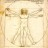

Express yourself. Start a blog.
See our free features »
3,477,776 blogs with 147,183 new posts today.
Hawt Post
More »Arsenal To Clear Out Reserve Players - But Who?
[image] As Arsenal begin their pre-season training on Monday, Arsène Wenger will be meeting with Academy directors Liam Brady and David Court along with coach Neil Banfield to discuss the futures of several Reserve team players. Earlier [...]
[» Young Guns ! «]News Departments
More »-
In Business
Kings Dominion to open Circuit City-themed ride 
In Religion
Conservapedia: Bigotry is its Own Worst Enemy
In Travel
Hello from Missouri- 
In HowTo
How Best to Love the World 
In Sports
Spotted: Maria Sharapova in Paris
In Health
breast cancer as a chronic illness: coping with the emotional toll-
In Food
Judy McNair Chicken and Buttermilk Biscuits 
In Technology
Firefox 3 tweaks and setting